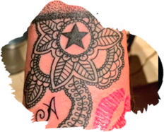
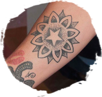
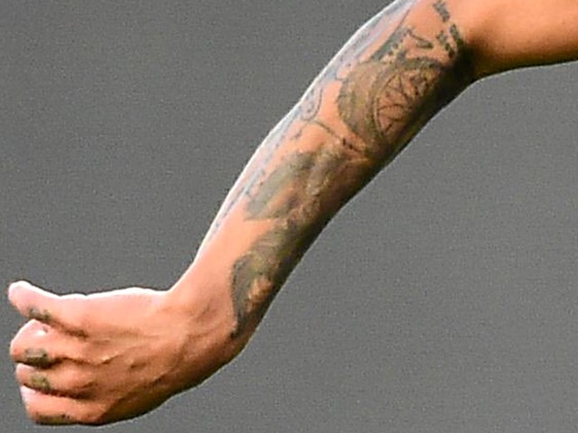
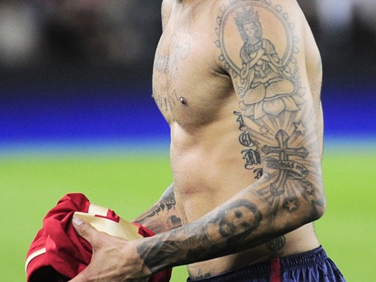
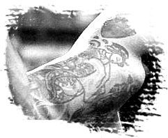

;){kind=link}


David Beckham tiene cuatro tatuajes con iconografía cristiana, de entre los cuales destaca el de Jesús sentado, ubicado en su abdomen, y cuyo diseño fue tomado de la pintura “El hombre de las penas” de Matthew R. Brooks. Su primer tatuaje fue el nombre de su hijo Brooklyn en letras góticas sobre su espalda baja. El nombre de su esposa Victoria, en sanscrito, reposa en su brazo izquierdo. Sin embargo, en la traducción literal de la imagen se lee Vihctoria.

Campeona del mundo con EUA
Después de estudiar en la Universidad de Penn State, Krieger fichó por el FFC Frankfurt. La estadounidense luce dos tatuajes. El más grande, ubicado en un costado, es una frase del Principito, que fue el primer libro que leyó en alemán. Traducido se lee: “Sólo se ve bien con el corazón, porque lo esencial es invisible a los ojos” y representa el tiempo que jugó en Alemania.
Después de estudiar en la Universidad de Penn State, Krieger fichó por el FFC Frankfurt. La estadounidense luce dos tatuajes. El más grande, ubicado en un costado, es una frase del Principito, que fue el primer libro que leyó en alemán. Traducido se lee: “Sólo se ve bien con el corazón, porque lo esencial es invisible a los ojos” y representa el tiempo que jugó en Alemania.

El francés puede ser uno de los mayores fanáticos a los tatuajes en el mundo del futbol; a la fecha ha decorado su cuerpo en más de cuarenta ocasiones. Su tatuaje más famoso, las alas de ángel en su espalda, simbolizan su nombre de pila. En el Islam, Djibril (Gabriel) fue el ángel que dictó el Corán a Mahoma. En su pierna derecha presume un gran diseño tribal; también tiene un tatuaje para su hija Ilona, y para sus hijos Cassius y Kobe; incluso tiene el nombre de su ex esposa grabado en la espalda. De entre sus tatuajes destaca el de su marca favorita de ropa: “Kiss of Death”.

El último defensor capaz de ganar el Balón de Oro luce en la parte superior de su brazo a un guerrero romano, el cual simboliza su herencia y sus atributos valerosos. También tiene tatuados los nombres de su esposa Daniela, así como el de su hija Andrea y el de su hijo Christian.


Ferviente admirador de la Revolución Cubana e íntimo amigo de Fidel Castro, Diego tiene tatuadas la imagen del comandante y del Che Guevara. Asimismo, Maradona tiene tatuados los nombres de sus hijas Dalma y Giannina en cada uno de sus brazos, y el de su madre, enmarcado con una rosa, en su espalda. Su último tatuaje causó polémica por tratarse de la palabra “perra”, misma que es la que ocupa de cariño para referirse a su última novia, Rocío Olivia.
El talentoso y competitivo jugador del PSG decidió tatuarse tres grandes figuras en su espalda. La primera corresponde a un pez koi, una señal de inconformismo y fortaleza. Fue el mismo Zlatan quien confesó su gusto por este pez por ir contra corriente. En medio de su espalda, Zlatan porta un tatuaje budista de 5 Devas. Cada uno de los Budas representa un elemento –viento, agua, fuego, percepción creativa y espacio-. Este diseño se interpreta como parte de una cábala de protección contra enfermedades y lesiones. La pluma grande que adorna la otra parte superior de su espalda es una pluma nativo americana, posiblemente de un águila, y representa el coraje, la convicción y la fuerza. De entre todos sus tatuajes sobresale la frase “Sólo Dios puede juzgarme” en su caja torácica, palabras que representan puntualmente la naturaleza rebelde de Zlatan.


El centrocampista portugués pasó algunos años en equipos de élite como el Liverpool y el Chelsea. Sin embargo, más allá de su talento futbolístico, sus tatuajes lo llevaron a la fama. Desde los dieciocho años comenzó a pintar su cuerpo. Un gran y colorido dragón chino se ubica en su espalda, y está dedicado a los años que vivió en su ciudad natal, Porto. Toda su pierna derecha, desde el tobillo hasta el muslo, aloja el rostro de tres mujeres, un reloj de bolsillo, una rosa, el teleférico de Lisboa, y una torre de Porto. Dos grandes calaveras cubren su torso, y su cuello cuenta con tres estrellas y los números 14 y 16, cumpleaños de su hija y su madre.


El francés puede ser uno de los mayores fanáticos a los tatuajes en el mundo del futbol; a la fecha ha decorado su cuerpo en más de cuarenta ocasiones. Su tatuaje más famoso, las alas de ángel en su espalda, simbolizan su nombre de pila. En el Islam, Djibril (Gabriel) fue el ángel que dictó el Corán a Mahoma. En su pierna derecha presume un gran diseño tribal; también tiene un tatuaje para su hija Ilona, y para sus hijos Cassius y Kobe; incluso tiene el nombre de su ex esposa grabado en la espalda. De entre sus tatuajes destaca el de su marca favorita de ropa: “Kiss of Death”.


La delantera y estrella de la selección estadounidense sólo posé un tatuaje que tiene un gran significado futbolístico y personal. El tatuaje es la palabra "Thirteen" y está subrayado con una rosa. Morgan heredó el número en 2010, tras la primera convocatoria a la selección mayor de Alex y el retiro de Kristine Lilly, quien portara el número por casi dos décadas. Lo que pocos saben es que Kristine es la heroína futbolística de Alexis, y el trece es el número que siempre ha portado Morgan desde que comenzó a jugar futbol competitivo a los catorce años. El tatuaje está ubicado en la cadera del lado izquierdo, como buen augurio de la zurda que tantos goles ha brindado a la selección estadounidense.


El astro brasileño comparte un tatuaje de diamante con su hermana Rafaella. En el de Neymar se lee “sorella”, hermana, mientras que en el de Rafaella se lee “fratello”, hermano. Apegado al hogar, Neymar lleva tatuado el nombre de su hijo David Lucca junto a su fecha de nacimiento; su hermana y su madre comparten su brazo izquierdo. En el pecho lleva tatuado “mi gran ídolo”, expresión dedicada a su padre. Otras de las frases y palabras están inscritas en su piel son: “Ousadia”, “Alegría”, “Deus é fiel” y “Tudo Passa”.


Lo primero que se tatuó el delantero del Cruz Azul fueron los nombres de sus hijos, Iara e Iván. Después de eso llegó una basta colección que incluye un Jesucristo al centro de su espalda, mismo que custodian dos ángeles. Ello pese a que el delantero ha declarado no ser practicante. Debajo de esta imagen sobresale la frase: “Sólo Dios puede juzgarme”.

El defensa español quiso inmortalizar en su cuerpo la consagración de España como campeón del orbe, y se tatuó una Copa del Mundo en su pierna derecha. Tiempo después, cuando el Madrid ganó la décima Champions League, la orejona fue tatuada en su pierna izquierda. En sus brazos sobresale una composición de Cristo y la Virgen, la frase: “nunca me olvidaré de ti”, en homenaje a Antonio Puerta, y las fechas de los ataques terroristas en EUA y en Madrid. En uno de sus costados sobresale parte del poema Invictus de William E. Henley: “Thanks God for my inconquerable soul, I am the master…” y del otro lado termina con “…of my fate”.


Nigel de Jong es un gran futbolista al que se le reconoce sobre todo por su rudeza a la hora de jugar. La mejor postal para describir lo anterior es la patada en el pecho sobre Xabi Alonso en la final de la Copa del Mundo del 2010. Tal vez sea su estilo de juego el que inspiró la armadura de guerrero indonesio que recorre su pecho, brazos y manos.

El volante italiano posé dos diseños completamente diferentes entre sí. En su brazo derecho porta un dibujo de la serie para niños Teletubbies, al que acompaña el nombre de su hija Gaia. En su pantorrilla derecha aloja una copia de una señal de tránsito en la que un jugador se barre sobre otro, demostrando la dureza de su juego.
El capitán de Dinamarca es uno de los futbolistas más tatuados, pero también es de los pocos artistas certificados en el arte. Uno de sus tatuajes más impactantes es un cementerio vikingo que abarca la mitad de su espalda. Según la leyenda danesa, cada vez que Dinamarca se encuentre en problemas, el vikingo Holger Danske, también tatuado, se levantará y los defenderá. Su nacionalismo es visible a través de varias banderas danesas repartidas en su cuerpo. Su familia, hermanos e hijos también tienen cabida. Sus nudillos muestran su lealtad al equipo de sus amores, el Liverpool , con las iniciales YNWA que significan “You will never walk alone”.
Carlitos podría seguir jugando en algún grande de Europa, pero su amor por Boca lo regresó a América. Dueño de decisiones tajantes, el tatuaje en su espalda es el claro ejemplo de ello. Toda la parte posterior sirvió de lienzo para que Piotrek Taton trazara una copia de la “Resurrección de los muertos”, obra que Tévez admiró en el Vaticano durante una visita al Papa Francisco. Según su propia historia, tras la visita compró un libro del Vaticano y, cuando lo abrió, lo primero que apareció fue esa imagen. Ese fue el momento en que decidió tatuárselo.
El amor de Miguel por el América es incuestionable. Para recordar siempre al equipo que lo proyectó como futbolista de alto nivel, Miguel se ha tatuado dos estrellas. Cada una simboliza los campeonatos que consiguió con América. Una de las estrellas fue diseñada por su esposa, y a ese tatuaje le acompaña la imagen de sus labios, mismos que Miguel besa en cada anotación.


Sydney es campeona del mundo, olímpica, y además es muy cercana a la súper estrella Alex Morgan. Su primer tatuaje se lo hizo a la edad de trece años después de apostarle a su mamá el permiso para realizarlo, quien aceptó siempre y cuando anotara diez goles en los torneos nacionales; anotó trece. Su espalda está cubierta con un cerezo, y debajo de él se encuentran las siluetas que representan a Sydney y a su mamá. En sus nudillos se lee la palabra LOVE, y la mayoría de sus tatuajes están relacionados con el amor hacia su madre.

Salvo una corona debajo de su pecho derecho, el torso de Dani está destinado a sus hijos, lugar en el que están inscritos sus nombres con grandes letras. En uno de sus brazos, Dani tiene un pez koi, que se identifica con el inconformismo y la fortaleza, y en el otro tiene la imagen de su ex esposa. Su tatuaje más curioso está alojado en su pierna, y contiene al gato Silvestre y al pájaro Piolín. El significado es simple, y tiene que ver con su estatura; en palabras de Dani: “Los pequeños somos buenos, somos más inteligentes que los futbolistas promedio, y podemos hacer cosas diferentes”.

El portero de Estados Unidos y del Everton es otro que utiliza su cuerpo como gran lienzo. El lado derecho de su pecho contiene los retratos de sus hijos y el izquierdo las palabras: “Jacob… mi precioso hijo… eres mi fuerza y mi alegría”, arriba de este se ubica una gran paloma. En el estómago tiene dibujado el contorno del estado de New Jersey. También tiene el logo de Superman y su número 24 en las costillas. A lo largo de su clavícula está inscrito el proverbio francés “Unidos por amor”, entre otros tantos tatuajes que decoran su cuerpo.
